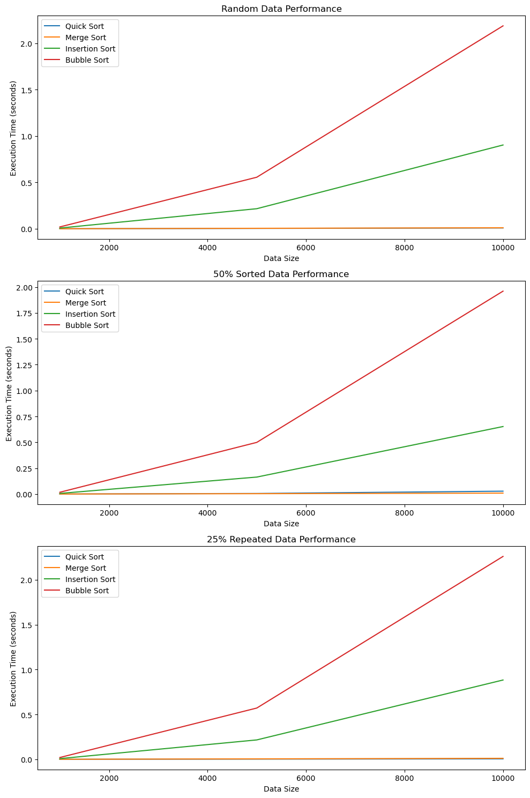

Implementing Sorting Algorithms
import random
import time
import sys
# Increase recursion limit for quicksort on large datasets
sys.setrecursionlimit(1500)
def quick_sort(arr):
"""Sorts an array using the Quick Sort algorithm.
Args:
arr (list): List of integers to be sorted.
Returns:
list: A sorted list of integers.
"""
if len(arr) <= 1:
return arr
pivot = arr[len(arr) // 2]
left = [x for x in arr if x < pivot]
middle = [x for x in arr if x == pivot]
right = [x for x in arr if x > pivot]
return quick_sort(left) + middle + quick_sort(right)
def merge_sort(arr):
"""Sorts an array using the Merge Sort algorithm.
Args:
arr (list): List of integers to be sorted.
Returns:
list: A sorted list of integers.
"""
if len(arr) <= 1:
return arr
mid = len(arr) // 2
left = merge_sort(arr[:mid])
right = merge_sort(arr[mid:])
return merge(left, right)
def merge(left, right):
"""Helper function to merge two sorted lists.
Args:
left (list): Left half of the list.
right (list): Right half of the list.
Returns:
list: Merged and sorted list.
"""
result = []
i = j = 0
while i < len(left) and j < len(right):
if left[i] <= right[j]:
result.append(left[i])
i += 1
else:
result.append(right[j])
j += 1
result.extend(left[i:])
result.extend(right[j:])
return result
def insertion_sort(arr):
"""Sorts an array using the Insertion Sort algorithm.
Args:
arr (list): List of integers to be sorted.
Returns:
list: Sorted list of integers.
"""
for i in range(1, len(arr)):
key = arr[i]
j = i - 1
while j >= 0 and key < arr[j]:
arr[j + 1] = arr[j]
j -= 1
arr[j + 1] = key
return arr
def bubble_sort(arr):
"""Sorts an array using the Bubble Sort algorithm.
Args:
arr (list): List of integers to be sorted.
Returns:
list: Sorted list of integers.
"""
n = len(arr)
for i in range(n):
swapped = False
for j in range(0, n - i - 1):
if arr[j] > arr[j + 1]:
arr[j], arr[j + 1] = arr[j + 1], arr[j]
swapped = True
if not swapped:
break
return arr
Generating Datasets
def generate_random_array(size, repeated=False):
"""Generates an array of random integers.
Args:
size (int): Number of elements in the array.
repeated (bool): Boolean flag to include repeated values.
Returns:
list: List of random integers.
"""
if repeated:
# Random array with repeated values
return [random.randint(0, size // 10) for _ in range(size)]
else:
# Fully random array
return [random.randint(0, size) for _ in range(size)]
def generate_partially_sorted_array(size, sorted_percentage):
"""Generates a partially sorted array.
Args:
size (int): Number of elements in the array.
sorted_percentage (float): Fraction of elements that are pre-sorted.
Returns:
list: Partially sorted list of integers.
"""
sorted_part_size = int(size * sorted_percentage)
sorted_part = sorted([random.randint(0, size) for _ in range(sorted_part_size)])
unsorted_part = [random.randint(0, size) for _ in range(size - sorted_part_size)]
return sorted_part + unsorted_part
def test_sorting_algorithm(algorithm, arr):
"""Tests a sorting algorithm by measuring its execution time.
Args:
algorithm (function): The sorting algorithm function to test.
arr (list): The array to be sorted.
Returns:
float: Execution time in seconds.
"""
start_time = time.time()
sorted_arr = algorithm(arr[:]) # [:] ensures that the original array is not modified
end_time = time.time()
return end_time - start_time
Measuring Execution Times
def run_tests():
"""Runs tests for each sorting algorithm on different dataset conditions.
Returns:
tuple: Contains the list of sizes and a dictionary with timing data.
"""
sizes = [1000, 5000, 10000] # Data sizes for testing
algorithms = [quick_sort, merge_sort, insertion_sort, bubble_sort]
algorithm_names = ["Quick Sort", "Merge Sort", "Insertion Sort", "Bubble Sort"]
results = {name: {'Random': [], '50% Sorted': [], '25% Repeated': []} for name in algorithm_names}
for size in sizes:
for i, algorithm in enumerate(algorithms):
random_data = generate_random_array(size)
partially_sorted_data = generate_partially_sorted_array(size, 0.5)
repeated_data = generate_random_array(size, repeated=True)
random_time = test_sorting_algorithm(algorithm, random_data)
partial_time = test_sorting_algorithm(algorithm, partially_sorted_data)
repeated_time = test_sorting_algorithm(algorithm, repeated_data)
results[algorithm_names[i]]['Random'].append(random_time)
results[algorithm_names[i]]['50% Sorted'].append(partial_time)
results[algorithm_names[i]]['25% Repeated'].append(repeated_time)
return sizes, results
# Run the tests and get the results
sizes, timing_data = run_tests()
Results
import pandas as pd
def display_results_table(sizes, timing_data):
"""Creates a table displaying timing data for sorting algorithms.
Args:
sizes (list): List of data sizes tested.
timing_data (dict): Dictionary containing execution times for each algorithm under different conditions.
Returns:
DataFrame: DataFrame with columns for data size, algorithm, and timing under different conditions.
"""
data = []
for size in sizes:
for algorithm in timing_data.keys():
data.append({
'Data Size': size,
'Algorithm': algorithm,
'Random Time (s)': timing_data[algorithm]['Random'][sizes.index(size)],
'50% Sorted Time (s)': timing_data[algorithm]['50% Sorted'][sizes.index(size)],
'25% Repeated Time (s)': timing_data[algorithm]['25% Repeated'][sizes.index(size)]
})
df = pd.DataFrame(data)
return df
# Display results in a table
results_table = display_results_table(sizes, timing_data)
print(results_table)
Data Size Algorithm Random Time (s) 50% Sorted Time (s) \
0 1000 Quick Sort 0.000773 0.000954
1 1000 Merge Sort 0.000844 0.000854
2 1000 Insertion Sort 0.007941 0.006675
3 1000 Bubble Sort 0.020105 0.017826
4 5000 Quick Sort 0.004189 0.006064
5 5000 Merge Sort 0.005363 0.004229
6 5000 Insertion Sort 0.216879 0.164527
7 5000 Bubble Sort 0.556419 0.499546
8 10000 Quick Sort 0.009065 0.028311
9 10000 Merge Sort 0.011113 0.009504
10 10000 Insertion Sort 0.903989 0.652584
11 10000 Bubble Sort 2.189101 1.960028
25% Repeated Time (s)
0 0.000359
1 0.000823
2 0.008054
3 0.020257
4 0.002552
5 0.004997
6 0.216361
7 0.571577
8 0.005529
9 0.011205
10 0.883839
11 2.260630
Plotting Results
import matplotlib.pyplot as plt
def plot_results():
"""Plots the performance of sorting algorithms under different data conditions.
Generates a plot for each condition ('Random', '50% Sorted', '25% Repeated') showing
execution time for each sorting algorithm across various data sizes.
"""
fig, ax = plt.subplots(3, 1, figsize=(10, 15))
sort_conditions = ['Random', '50% Sorted', '25% Repeated']
for idx, condition in enumerate(sort_conditions):
ax[idx].set_title(f'{condition} Data Performance')
ax[idx].set_xlabel('Data Size')
ax[idx].set_ylabel('Execution Time (seconds)')
for algorithm, times in timing_data.items():
ax[idx].plot(sizes, times[condition], label=algorithm)
ax[idx].legend()
plt.tight_layout()
plt.show()
# Plot the results
plot_results()
